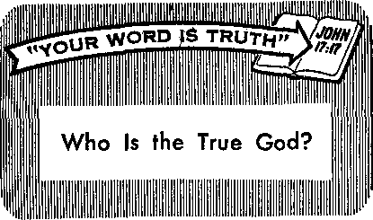

MYSTERY
hundred years
“I Am the Way and the Truth and the Life”
Probing the Mystery of Ancient America
Will You Have a Cup of Tea?
Priests Who Want to Marry
5 SEPTEMBER 8, 1966
THE REASON FOR THIS MAGAZINE
News sources that are able to keep you awake to the vital issues of our times must be unfettered by censorship and selfish interests. “Awake!" has no fetters. It recognizes facts, faces facts, is free to publish facts, It is not bound by political ties; it is unhampered by traditional creeds. This magazine keeps itself free, that it may speak freely to you. But it does not abuse its freedom. It maintains integrity to truth.
The viewpoint of '‘Awake!" is not narrow, but is international. “Awake!” has its own correspondents in scores of nations. Its articles are read in many lands, in many languages, by millions of persons.
In every issue "Awake!" presents vital topics on which you should be informed. It features penetrating articles on social conditions and offers sound counsel for meeting the problems of everyday life. Current news from every continent passes in quick review. Attention is focused on activities in the fields of government and commerce about which you should know. Straightforward discussions of religious issues alert you to matters of vital concern. Customs and people in many lands, the marvels of creation, practical sciences and points of human interest are alt embraced in its coverage. "Awake!" provides wholesome, instructive reading for every member of the family. •
"Awake!” pledges itself to righteous principles, to exposing hidden foes and subtle dangers, to championing freedom for all, to comforting mourners and strengthening those disheartened by the failures of a delinquent world, reflecting sure hope for the establishment of God’s righteous new order in this generation.
Get acquainted with "Awake!" Keep awake by reading "Awake!"
MU i » ■JW i MP ►
Published Simultaneously in the United States by the WATCHTOWER BIBLE AND TRACT SOCIETY OF NEW YORK, INC.
117 Adams Street Brooklyn, N.Y. 11201, U.S.A.
and in England
WATCH TOWER BIBLE AND TRACT SOCIETY
Watch Tower House, The Ridgeway London N.W. 7, England
N. H. KnosB, President Grant Suiter, Secretary
Average printing each issue: 4,475,000 Now published in 26 languages
|
■ copy (Aistmli, 5«; Siith Africa. 3'/, el Yearly subscripilon rites Officer for semimonthly edition* America, U.&i 117 Adams Street, Brooklyn, N.Y. 11201 $1 Australia, 11 Berkeley Road, Berkhampsted, N.S.W, $1 Canada, K0 Bridgeland Are., Toronto 10, Ont, $1 |
*e mlmont hl y—Afrikaans, Cebuano, Danish, Dutch, English, Plnntsh, French, German, Greek, Tlnko, Italian. Japanese, torean, Norwegian, Portuguese., Spanish, Swedish, Tngalog, Zulu. Monthly—Chinese, Clnyanja, Hiligaynon, Malayalam, Polish. Tamil, Ukrainian. |
|
The Ridgeway, London N.W. 7 7/fl New Zealand, 021 New North Rd., Auckland S.W. 1 7/- South Africa, Private Bag 2, P.O. Elamtefontein, Tfl. 70c (Monthly editions cost half the regular rate. > Remittances for subscriptions should be sent to the offline In your country. Otherwise send your remittance to Brooklyn. Notice of expiration is sent at least two lilies before subscription expires. |
CHANGES OF ADDRESS shoild reach is thirty days before your moving date. Give is your old and new address (If possible, your old address label). Write Watch Tower, Watch Tower House, The Ridgeway, London N.W. 7, England. |
|
Entered as second-class matter at Brooklyn, N.Y, Printed In England |
The Bible translation regularly used In “Awake1” h the New World Translation of the Holy Scriptures, 1961 edition. When other translation are used, this Is clearly marked.
CONTENTS
‘‘I Am the Way and the Truth and the Life”
Probing the Mystery of Ancient America 9
“Your Word Is Truth”
Volume XLVII London, England, September B, 1966 Number 17
Should Pastors
44T Tnions for Clergymen.”
LJ Thus read the headline of a report appearing in a popular United States news weekly recently. It told of efforts on the part of Roman Catholic clergymen, and especially the assistant pastors, to unionize in Los Angeles, California, in Detroit, Michigan, and in Oklahoma City, Oklahoma,
Not that this unionizing is limited to Roman Catholic pastors. The same report told that early in May of this year a committee of seven Episcopal priests, together with a deaconess and a rector’s wife, had met to draft a constitution for a clerical union of the 1,000 Episcopal clergymen in California.—Newsweek, May 9, 1966.
What is behind these efforts of pastors to unionize? Of
course, their desire is primarily to improve their lot, financial or otherwise. Regarding the plight of the Roman Catholic assistant pastors, “Msgr.” John D. Conway, who at the same time is an authority on canon or Roman Catholic Church law, noted: “An assistant priest can be 50 years old and still be treated as a child by his superiors. A bishop can order an assistant priest around without consultation with him and his pastor even though canon law requires consultation with the pastor. There are channels of communication, but they don’t work out. Organized leverage may be in some cases the only way to establish communication.”
The pastors taking the lead in organizing the Episcopal clergy of California stated that their purposes were to protect them from their superiors, from the arbitrary actions of their bishops, to get more equitable salary distribution, to gain unemployment insurance and to get legal contracts between the clergy and their bishops, on the one hand, and, on the other hand, to protect the clergymen from their flocks, as it were, from the local vestries and church boards. As one of them put it: “Negotiation is ineffective unless it proceeds from a position of power. And we don’t think it will take long to get it.” The Episcopal unionizing pastors speak of gaining a “position of power,” and their Roman colleagues of “organized leverage,” both, therefore, advocating the use of pressure or force to gain their ends.
But does all this make sense? A pastor is supposed to be a shepherd; that is what the word literally means, it coming from the root “to pasture.” Does a shepherd need to organize with other shepherds to protect himself from his own flock? If that
seems to be necessary, there must be something wrong with both the shepherd and his flock; and apparently something wrong with the way the shepherd has been leading or teaching his flock for him to need to resort to the “power play,” as it is called, to get what is right.
The same applies to the pastors* organizing to protect themselves from their bishops, literally, their overseers, to whom the pastors themselves are as a flock. Is there not something woefully lacking with religious organizations professing to be Christian, when such secular tactics, those borrowed from the economic war between capital and labor, seem to become necessary? Certainly no precedent for unionizing pastors can be found in the Sacred Scriptures.
The apostle Paul had the “anxiety for all the congregations.” No question about his being a hardworking shepherd. But did he think it necessary to organize with other missionaries or overseers to protect themselves from their flocks? Or did Paul exert pressure so as to choose where he would minister? (2 Cor. 11:28; Gal. 2: 8-10) Not that his flocks were always generous and considerate. At times they failed to contribute even the bare necessities to sustain Paul in the ministry. What did Paul do? Organize or in some other way exert pressure to procure a decent salary, as some of the modern pastors are doing? Far from it.' He simply went to making tents to pay his expenses, until such time as they saw their privilege of contributing toward his expenses, which the Christians at Philippi did.—Acts 18:3, 4; 1 Cor. 4: 11-13; Phil. 4:10, 15, 16.
Should not the entire relationship between those'professing to be Christians be based on love, and all service and giving be voluntary? In fact, the apostle Paul made this his boast, that he was not depending upon others for support of his ministry. He had learned to be self-sufficient and knew how to get along with either little or much. (1 Cor. 9:15-18; Phil. 4; 11, 12) Should not Christian overseers or presiding ministers be governed by unselfish, principled love in dealing with their ministerial assistants, and should not the presiding ministers deal with their flocks and their flocks deal with them in the same way?
What is needed is the resort not to force, to unionizing, but. to the principles that Jesus Christ gave his followers for dealing with one another, namely, those of justice and love. “Just as you want men to do to you, do the same way to them”; that is justice. And further, “By this all will know that you are my disciples, if you have love among yourselves.” How far removed is that kind of love from resorting to force to gain one’s ends! Applying such Christian principles would eliminate all need of Christians to organize to protect themselves from one another!—Luke 6: 31; John 13:35.
It is a well-known'fact that there is a great shortage of pastors in Christendom. The clerical profession is becoming ever less sought after. The fact that pastors should feel it necessary to unionize, that they should find conditions that cause them to resort to such methods in dealing with their flocks and their superiors, is but another evidence that Christendom is not practicing true Christianity, for Jesus said: “By their fruits you will recognize them.”—Matt. 7:16.
Happily, though, there is no unionizing activity among the overseers, presiding ministers or ministerial assistants associated with the Christian witnesses of Jehovah. Among them there is no salaried clergy class. In fact, they do not even have a ‘clergy-laity’ distinction, for they know that Jesus said: “All you are brothers.” —Matt. 23:8.
needs of dying mankind. How are these fulfilled tn Jesus Chnsf?
Distinguished teachers of ancient times referred to their doctrine as “the Way." Buddha claimed, that he was the rediscoverer of an old path, long lost, mtx> the reality of'things. Lao Tzu, founder of Taoism, called his teaching “the Way.” However, none of these tew’hei'fs taught men about God as did Jesus Christ: of the first century of our Ctommon Era. Their teachings became permeated with demonism. Christ shunned all demonism. And he, as no other man, taught that God was maridnd’s heavenly Father, instructing his follower to pray: “Our Father in the heavens, let your name to be sanctified.” —Matt. 6:9.
ft was Jesus Christ who brought home to men how truly fatherly God is, and with what childlike confidence we can draw near to him. Jesus gave us the happy feeling that to turn to God is like turning to a, loving father, which all men, because of the multitude of problems of our day, desperately need to do.—Rom. 8:20-31, 34; 2 Cor. 5:20, 21.
Shortly before his death, Jesus said 'to his. apostles: “In the house of my Father there are many abodes. Othenvise, I would have told you, because I am going my way to prepare a place for you. Also, if 1 go my way and prepare a place for you, I. am coming again and will receive you home to myself, that, where I am you also may be. And where I am going you know the way.”—John 14:2-4.
But Thomas, an apostle of Jesus Christ,, was not that sure. “Lord,” he said, "we do not know where you are going. How do we know the way?” Jesus then said to him: “I am the way and the truth, and the life. No one comes to the Father except through me.” (John 14:5, 6) Jesus was returning to his Father in heaven: “I am going my way to the Father,” he said. “I. am going my way to the Father, he-cause the Father is greater than I am./’ (John 14:12, 28,” 17:5) In John chapter 1.6, verses 10 and 28, Jesus emphasized this very point: of going tn the Father.: “I am going to the Father and you will behold me no longer.” "I came out from the Father and have come into the world. Further, I am. leaving the world and am going my way to 'the Father,” ■
In Jesus Christ alone we find what is ■literally and spiritually true, namely, that he leads men to the Father and that ‘no one can come to 'the Father except: through him.’ Christ declared that, he was the way to God, because by following in Jesus’ footsteps? closely men would come to know the heavenly Fattier. They would learn 'to know the 'true God. as te really is and not as they imagined him 'to be. All of their
misconceptions of Him would vanish. Their misunderstandings about the Father that had deceived and caused them to wander in darkness would then, through Christ, be cleared up. Their joy at being reconciled or reunited with God would thus be fulfilled—2 Cor. 5:20, 21.
Knowing that God is pure and holy, some have feared coming to God in their sinful condition. (Isa. 6:1-7) But seeing what a loving God he is, they are encouraged to come to Him through that new and living Way, Jesus Christ. What they see through the life of Christ is not a god as portrayed by false religions of the world, a god who delights in tormenting souls in purgatory or in a burning hellfire, as they may have believed, but a loving Father who comes to meet them and welcomes them back into peaceful relationship with himself, as Jesus so beautifully taught in his illustration of the prodigal son. (Luke 15:11-32) Through Christ they learn that Jehovah God is not cold and hard and implacable, as false religion had taught. They learn that Jehovah is a loving Father, wise in understanding, tender and most gracious. (Ex. 34:6, 7) ‘I am the way,’ declared Jesus Christ, ‘the One through whom you can learn more about God, the very Source of life. Follow me!’ —Ps. 36:9; Matt. 16:24.
How is Jesus Christ "the way” to the Father? He is the One who has made known the Father’s will. (John 8:28, 42) In him we see the only path to the Father and to life everlasting. When many of Jesus’ disciples left off following him because of some things they could not comprehend, Jesus then said to his apostles: "You do not want to go also, do you?” Simon Peter answered him: “Lord, whom shall we go away to? You have sayings of everlasting life; and we have believed and come to know that you are the Holy One of God.” (John 6:67-69) Peter recognized Jesus as coming from God and as the way to God, who is the Source of everlasting life. If we maintain this same appreciation of Jesus that Peter showed, we, too, will be showing that we recognize Christ as "the way.”
Jesus is “the way” also by his example. His is the perfect life to be imitated. Jesus’ apostle Peter writes: “In fact, to this course you were called, because even Christ suffered for you, leaving you a model for you to follow his steps closely.” What sort of an example did Jesus leave for us? Peter answers, in these words: “He committed no sin, nor was deception found in his mouth. When he was being reviled, he did not go reviling in return. When he was suffering, he did not go threatening, but kept on committing himself to the one who judges righteously. He himself bore our sins in his own body upon the stake, in order that we might be done with sins and live to righteousness.” (1 Pet. 2:21-24) Jesus’ example also aids us to come to know and please the Father, the Source of life everlasting, by showing us what kind of life we must live. The way to God is to follow Christ closely.
Jesus also is “the way” to the Father by virtue of his sacrifice. By offering up his perfect human life for the sinful offspring of Adam, Christ made it possible for imperfect men to draw near to God through faith. Paul makes this point clear, saying: “Christ entered, not into a holy place made with hands, which is a copy of the reality, but into heaven itself, now to appear before the person of God for us.” “Since we have a great priest over the house of God, let us approach with true hearts in the full assurance of faith,” —Heb. 9:24; 10:21, 22.
Hence by obeying the commandments of Christ, by imitating his example, by depending on the merits of his ransom sacrifice, we show that we recognize Christ as the way to the Father, who promises to bless Jesus’ anointed followers with life in the heavens and the “other sheep” with everlasting life on earth.—Luke 12:32; John 10:16; 3:16.
Christ is also “the truth.” "I am the way and the truth,” he says. He is in opposition to all that is false, including false religion. He is the realization of the truth to which the shadows of the Mosaic law as well as the prophecies of the Hebrew Scriptures were pointing forward. All those things of a prophetic kind were focused on him. He was the living Truth of those revelations of God’s purpose, the things to which God had sworn. He is no shadow, but the true Messiah, Christ. —Col. 2:17.
With Jesus’ being born on earth, his coming into the world at the time of his baptism in water, his three and a half years of public service in behalf of God’s kingdom, his death in faithfulness to God, his resurrection from the dead and his exaltation to heaven, with all these historical events, God’s truth arrived in the person of Jesus Christ. The whole career of Jesus Christ, therefore, was one of bearing witness to the truth. Since he is the King of God’s kingdom, God’s Messianic kingdom as represented in Jesus Christ is the truth; for the purpose of bearing witness to it Jesus was born and came into the world.—John 18:37.
In view of the fact that Jesus Christ is "the truth,” as he himself said in John 14:6, we must have the correct belief about him. The way to the Father is by knowing the truth about Christ. This is also the way to everlasting life. (John 17: 3) Merely to have an intellectual concept of Christ or to have thoughts and notions about Christ is not what is meant by knowing him. To know Christ is to live the teachings of Christ, to apply this whole matter of Christianity to one’s life, to let his words and example mold our lives according to the Model God has given us. By doing this we show that we know the truth and that the truth has liberated us from bondage to superstitious fears.
Jesus is also “the life.” He can speak of himself as being the life because he bought the human race with his lifeblood. By means of this ransom provision he will grant everlasting life to all those who exercise faith in him, thus becoming their Eternal Father. (John 3:16; Rom. 6:23; Isa. 9:6) As the King of God’s heavenly kingdom, and as High Priest and Eternal Father, Christ will cause life to flow to all his earthly subjects. When he raises tine dead to life, he thus will bring to an end Adamic death and its effect on the human race- The sting producing death, namely, sin, Christ will remove from all the earth. “Death will be no more, neither will mourning nor outcry nor pain be any more.” (Rev. 21:4) The apostles of Jesus Christ, thrilled with these facts, write: "Christ came ... and obtained an everlasting deliverance for us.” “Look! [God is] making all things new.” “ ‘Death is swallowed up forever.’ ‘Death, where is your victory? Death, where is your sting?’ ., . But thanks to God, for he gives us the victory through our Lord Jesus Christ!” (Heb. 9:11, 12; Rev. 21:5; 1 Cor. 15:54-57) Since Christ is victor over inherited sin and death, he is also our life!
Christ is “the life,” for he made everlasting life possible not only for the living but for the dead as well. He is “the resurrection and the life.” It was his death and resurrection that opened up the way for the dead to return to life in a resurrection. Jesus told Martha, the sister of Lazarus whom he was about to raise from the dead: “I am the resurrection and the life. He that exercises faith in me, even though he dies, will come to life; and everyone that is living and exercises faith in me will never die at all.” (John 11:25, 26) Christ is the living one who has “the keys of death and of Hades.” (ReV. 1:17, 18) Therefore, Christ is the hope of the living and the dead. He has promised to open up the tombs and give the dead life in his new earth ruled by his heavenly government.—John 5:28, 29.
The way Christ lived is the way life should be lived today. His human life was a life dedicated to the service of God. Do you consider yourself a Christian? Then is your life dedicated to the service of God? Are you following in Jesus’ steps? If so, there are marvelous prospects ahead of you. As Jesus said: “If anyone observes my word, he will never see death at all.” “This is the bread that comes down from heaven, so that anyone may eat of it and not die. I am the living bread that came down from heaven; if anyone eats of this bread he will live forever; and, for a fact, the bread that I shall give is my flesh in behalf of the life of the world.”—John 8:51; 6:50, 51.
For an unnumbered multitude, following Jesus Christ will mean life everlasting in perfect health on a paradise earth. To the evildoer who said to Christ: “Jesus, remember me when you get into your kingdom,” Christ promised: “Truly I tell you today, You will be with me in Paradise.” (Luke 23:42, 43) By practicing righteousness, not only this evildoer, but myriads, doubtless, untold thousands of millions of others will also come to enjoy the Paradise of Christ’s Kingdom rule. For as the psalmist said: “The righteous themselves will possess the earth. And they will reside forever upon it.”—Ps. 37:29.
For a very small number, compared with those who will inherit life on earth, Christ's course makes possible the privilege of reigning with him in the heavens for a thousand years. What a glorious prospect this! What a life to be enjoyed! Revelation chapter fourteen, verses one through four, tells us that 144,000 redeemed from the earth will experience this unspeakable privilege.—Rev. 20:4-6.
What meaning there is in those words of Jesus: “I am the way and the truth and the life”! The way to God is through Jesus Christ. As the one in whom the prophecies of the Hebrew Scriptures found fulfillment, Jesus himself is “the truth.” He is also “the life” in that through him everlasting life has been made available for mankind. Should not this warm and hopeful approach to humanity’s problem—man’s alienation from God because of inherited sin—inspire us, more so, impel us to respond to God’s love through Jesus Christ, to worship and serve Him for our everlasting good and to His eternal glory? It most certainly should. For this is the will of God.
THE REGNAL YEAR
• In historical records it was the practice in ancient Israel, as well as in Babylon and Medo-Persia, to count the reigning or regnal years of a king as full years beginning on Nisan 1. The months during which the king might have actually started to rule prior to Nisan 1 were considered as forming his accession year, but were historically credited or counted as belonging to the full regnal years of the king who had preceded him. Hence, when the Bible speaks of a king as reigning for “forty years,” it refers to a full forty-year period—1 Ki. 1:30; 2:1, 10, 11; 11:42.
MYSTERY
hundred years
DURING the past one hundred and thirty years archaeologists have been digging up the ruins of ancient American empires, some of which antedate by some two the days of Nebuchadnezzar of Babylon and Cyrus of Persia. Here were peo-pies whose noble and priestly classes were already, like those of Babylon and Egypt, well-versed in sculpture, mathematics, astronomy and metallurgy. Their concepts of government and religion approximated those of the contemporary empires of the East. Yet a considerable mystery surrounds those early American cultures.
In the case of Babylon and Egypt, progress and development can be traced through many centuries. Not so, however, with the ancient cultures of Mexico and Peru. Suddenly, without gradual process, they blossomed where yesterday there had been only simple tribes of hunters and grain gatherers whose ancestors are believed to have reached the Western Hemisphere by way of the northern route from Siberia. How could this happen? How could those Indians span the centuries in one vast stride and achieve civilizations that ranked with Babylon and Egypt?
Practically the same question is raised by a modern writer on language origins, who says: "At the time of their first appearance, the astronomical and mathematical knowledge are fully developed, and this presupposes a previous evolution of long development—of which nothing is known—unless there was some cultural importation, which is hardly thinkable.”1
But is a cultural importation unthinkable? If we dismiss the idea, we still have on our hands the unexplained emergence of full-blown civilizations well over two thousand years before the arrival of Columbus in America. And there is growing support In scientific circles for the proposition that the numerous similarities between the cultures of ancient America and the Near East cannot just be shrugged off as coincidences or parallel developments arrived at independently at such widely separated locations.
One strange parallel that some view as being merely coincidental has to do with the worship of the sun. The royal family of ancient Peru claimed to be “children of the Sun” and, therefore, so superior to their subjects that the Inca had to marry his own sister in order to produce a legitimate heir.2 The Egyptian Pharaohs also claimed descent from the sun, and were permitted to marry only their own sisters,
appearance, the [Mexican] Maya script and a practice followed by the Ptolemies right
down to Caesar’s time. What is even more striking is that the name for the sun, in Peru as in Egypt, was Ra.3 And among the Chaldeans the father of the gods was called Ra.4
Serpent worship, linked with worship of the sun, was practiced in almost all the empires of the East. Referring to this fact, Joseph Bryant, in his Ancient Mythology, Volume II, page 203, had this to say: “The worship began among the people of Chaldea. They built the city of Opis upon the Tigris, and were greatly addicted to divination, and to worship of the serpent. From Chaldea the worship passed into Egypt, where the serpent Deity was called ... C’neph.” Of the same creature, M’Clin-tock and Strong’s Cyclopcedia states: “The Phoenicians adored that animal as a beneficent genius; . . . The Egyptians represented the eternal spirit Kneph, the author of all good, under the mythic form of that reptile.”
In ancient American cultures the serpent was prominent. Walls, porches and sacred buildings are frequently decorated with the serpent motif. Not only this, but Quetzalcoatl, signifying “feathered serpent,” was revered in Mexico as the great revealer of knowledge, the instructor in the use of metals, in the science of agriculture, and in the arts of government? Referring to such symbols of ancient art as the serpent, the tree of life, and others, the Egyptologist Joseph L. Smith, in his book Tombs, Temples and Ancient Art, remarks on the “striking features in common between the cultures of the Egyptians and of the Maya.”
In Babylon, the ziggurats with their great brick-built steps leading up to lofty temples are known to have dominated each large city. They were also used as observatories by the priest-astronomers. The ancient empires of Middle America also had their ziggurat-like structures atop which sacrificial rites were performed and where astronomers conducted their search of the night sky? It has even been claimed that the Maya calendar system, based on astronomical knowledge, was even more accurate than the Babylonian system.
In Egypt the pyramids were reared as tombs for mighty rulers. At least one Maya structure, the Temple of the Inscriptions at Palenque, in northern Chiapas, Mexico, has proved to be the tomb of some important personage. As in Egypt this tomb is equipped with a gigantic sarcophagus. Further elaborating on this Mayan pyramid-tomb, Alma M. Reed in the book The Ancient Past of Mexico states: “Fragments of the jade mosaic mask found inside the sarcophagus have been fitted together, providing still another similarity with Egypt and even with ancient Greece, where the faces of dead Achaean royalty of the Mycenaean period were covered with masks of thin beaten gold.”
Commenting upon some of the beautiful art objects of polished jade retrieved from the cenote or sacrificial well at Chichen Itza by divers, and doubtless having in mind the ancient use of jade in the religious art of Asiatic countries, the late artist-archaeologist Miguel Covarrubias said: “It would be hard not to share the belief in stronger and more direct ties with the East.”7
The use of cylinder seals was widespread in the empires of the East. They also occur in the Middle American cultures. In his extensive consideration of the subject, Henri Frankfort of the Oriental Institute of the University of Chicago stated: “One must reckon to a greater extent than most of us were hitherto prepared to admit with the possibility of diffusion from the Middle East.’’3
Gordon F. Ekholm, associate curator of anthropology, American Museum of Natural History, drew attention to the close resemblance between Cambodian and Mayan temple pyramids and to the almost identical decorative motifs in the sculptured panels of Southern India and Yucatan, Mexico. Brushing aside the claim that these features could have been developed independently, he declared: “To my mind it appears more probable that these similarities resulted from some historical contact between the two areas.”6
In the field of metal artistry, the empire of the Incas in Peru is known to have attained a remarkable proficiency. Nor does there appear to be any long record of the history of its development. Rather, as stated by Constance Irwin in Fair Gods and Stone Faces, "metallurgy seems to have burst forth suddenly in fullest flower.” It had taken hundreds of years for the intricate techniques to be developed in the Near East.
How, then, can we explain all these similarities and the sudden emergence of a high degree of culture among the Indians of Middle America? How was it possible for them to parallel the Asiatic empires in so many of their features? Surely there must have been importations, not a few but many, from Europe and Asia during the period since 900 B.C.E. But how could such visitors ever get to America? The answer must be, By boat. But from where? There is considerable difference of opinion on this point. Some insist it could have been only from the sunrising, across the Atlantic, in order to conform to an old tradition mentioned by Montezuma to the Spaniards. Others claim it could have been from southeast Asia across the Pacific. Indeed, there seem to be indications that contacts may have been made from both east and west.
Suggestive of contact from both directions, J. Gamier, in his book The Worship of the Dead, writes: “It will be observed that, although their gods Hu and Wodan associate the Mexicans with the Buddhist races, their other gods, and their language, ritual and customs, and the form of their temple towers, connect them more intimately with the Phoenicians and the Babylonians, while their festival of the dead on November 17 is more especially Egyptian.”
Beautifully painted frescoes adorning the walls of ruined temples located at Bonampak in eastern Chiapas, Mexico, came to the attention of archaeologists as recently as 1946. As stated by C. W. Ceram, in the book The March of Archaeology, “the style of the paintings is amazingly reminiscent of Egypt. The figures are arranged in rows, and the heads and feet of most of the persons represented are shown in strict profile.”
Since the Egyptians and the Babylonians were never notable as maritime powers, the question arises, Who were the agents who carried the lore of Egypt and other eastern empires to the shores of America? Writing in the century before Christ, the Greek historian Diodorus Siculus told about the discovery of land westward from Libya (northern Africa) by the Phoenicians. He described it as “an island of considerable size and situated as it is in the ocean it is distant from Libya a voyage of a number of days to the west. Its land is fruitful, much of it being mountainous and not a little being a level plain of surpassing beauty. Through it flow navigable rivers . . . ”10
Close attention to this description impresses the reader with the fact that only a continental land mass, believed at the time to be an island, or a large island such as Cuba would meet all of the requirements here set forth.
In her book Fair Gods and Stone Faces, in which considerable evidence is offered that points to the Phoenicians as the importers of cultural knowledge to America, Constance Irwin quotes a very significant statement by A. W. Brogger, director of the Norwegian Museum in Oslo: “It could also very well be believed that the route to America was discovered during the Bronze Age, at the time when sea voyaging was at its height It could perhaps help to explain why the American peoples were living in a Bronze Age when Europeans reached them in the next great era of voyaging. It must be remembered that the prevailing winds and currents almost compel the discovery of Central America from Spanish and Portuguese harbors, when once open-sea voyages are made.”
Of the unique contribution made by the Phoenicians to the development of civilizations, James F. McCurdy, in the book History, Prophecy and the Monuments, has this to say: “They penetrated unknown seas with an enterprise unsurpassed by Columbus or Drake. They circumnavigated Africa. They worked mines in Spain and Britain. ... They taught international trade and navigation to the Greeks and then to the Romans. . . . Not only were the Phoenicians the originators of a worldwide trade and of a farsighted commercial policy unrivalled in ancient times, but their maritime supremacy has been the most enduring known to men.”
Phoenician shipmasters had their markets in Egypt, all around the Mediterranean, and along the Atlantic coasts of Africa and Europe. Their commercial fleets sailed the Red Sea and the Indian Ocean. They borrowed most of their culture from the nations with which they did business, and we may be sure they also transmitted the information they picked up to other far-off lands to which trade took them. They were notorious as slave dealers, and no doubt their slave shipments included Negroes from the African coast. (Ezek. 27: 13) And, strangely, ancient American sculptures include figures of unmistakable Negroid appearance long before European slave traders delivered their human merchandise to the Western Hemisphere.
Another striking fact that seems to link Phoenicia with the Aztec civilization of Mexico is the practice of offering human sacrifices. The Phoenicians indulged in this horrible practice, offering helpless infants to their idol god. Likewise in the ancient empire of Mexico young men, maidens, captives and even young children were offered in appeasement of the gods.11
A recent news dispatch reports that an Italian writer is now offering evidence that the Etruscans were the first to reach the . shores of the Americas many centuries before Columbus. In view of this and of the fact that archaeologists continue to dig for more evidence, the immediate source of the early American cultures remains somewhat of a mystery. Of this we may be sure, that just as man originated in one spot and thereafter migrated eastward and westward around the earth, so also Babylonish religion and its cruel, superstitious practices spread across lands and oceans to bedarken men’s minds. The peoples of ancient Middle America were no exception.'
REFERENCES
1 The Alphabet, David Dlringer, page 123.
2 Harpers few Monthly Magazine, Vol. VII, No. 37, page 9, Article on “Ancient Peru" by E. G. Squier.
3 The Worship of the Head, J. Garnier, pages 142, 143.
4 Chaldea, George Rawlinson, page 72.
5 Fair Gods and Stone Faces, C. Irwin, page 39.
6 Ibid., pages 112. 113.
7 The Ancient Past of Mexico, Alma M. Reed, page 8. 6 Ibid., page 10.
8 Is American Indian Culture Asiatic!, Gordon F. Ekholm, in Natural History issue of October 1950.
10 Fair Gods and Stone Faces, page 220.
11 Americans Before Columbus, Elizabeth C. Baity, page 206.
WITH that cheerful invitation your hostess will pour a hot, amber-colored fluid into a cup and hand it to you with the hospitable query, “Do you care for cream or sugar?” Then you can relax and enjoy a brief interval of small talk as you slowly sip the aromatic beverage. A sense of well-being gradually sets in, and even your thinking ability seems to be improved. And the flavor is so good! so say tea drinkers.
Perhaps you have wondered why the last attempt you made at
WILL YOU
HAVE A
that appear on the shelves. Upon examination you will observe that on each package label there is often some clue to the country of origin. Also, you will ■ note that the label indicates whether the content is black, green or oolong tea. In the case of black tea there are likely to be added words of description, such as “flowery pekoe,” “orange pekoe,” or “pekoe.” Naturally, you are curious. What makes the difference between black and green tea, and what does this word “pekoe” mean?
tea brewing did not turn out as well as you might have wished. What is it that makes a good cup of tea? Is it the brand you buy at the grocery store that counts? How is one to determine the right blend of tea? Are the most expensive blends the best? And what about the brewing procedure? Is there, perhaps, something you are overlooking?
If you wish to gain greater enjoyment from this most common of all drinks apart from plain water, if you would like to improve the quality of your hospitality, it will be to your advantage to get the answers to these questions. Even the angles of economy and avoidance of waste may well be involved. After all, you may be paying as much as $1.50 per pound for your tea, and you want to get the most for your expenditure.
In the larger stores you may be bewildered by the great variety of blends
The leaves of the same tea plant may be used to produce black, green or oolong tea, for these differences are due to variations in the treatment and processing of the leaves for market. In the case of black tea, for example, the leaves are allowed to ferment when first brought in from the plantation, before the rolling and drying operations. Green tea, on the other hand, results when this fermentation is prevented by steaming the leaves and thereby sealing the pores on their surfaces. Oolong tea lies somewhere between black and green tea, for a limited degree of fermentation is permitted in its preparation.
The word “pekoe” refers to the grade of leaf that predominates in any blend of black tea. Keep in mind that all teas on the market today are really blends of several types of tea as supplied by the tea estates. On the tea plant each branch has a topmost, tender bud, and then a series of progressively larger leaves down the stem. When the leaves are brought in and processed, they are put through sieves with differing sizes of mesh. The smallest leaves, including the buds, usually give the best quality tea, having more body and yielding their flavor more quickly. These are designated “flowery pekoe.” Next in size comes “orange pekoe,” then “pekoe,” and finally the largest sizes are known as “souchong."
But now the question, Which tea shall I choose? The problems of cost and quality both enter the picture here. How much do you wish to pay? A word of caution is in order here. Experts in grading teas found that there was realiy very little relationship between price and quality. In other words, the most expensive tea may not be the best. In fact, it was noted that teas they graded as “fine,” regardless of the grade of leaf, might cost anywhere from $1.00 to $3.25 per pound, while teas graded “medium” might run from $1.00 to $3.85 per pound.
The answer to your shopping problem, then, seems to be to try a number of teas in succession, and when you locate a blend that is reasonably priced and that yields a brew that appeals to your taste, settle for that. Later, if you are served a cup of tea somewhere that seems to be an improvement, you can always inquire discreetly about the brand name,and then do some private investigation on the comparative price.
If you are not a tea specialist, you may well wonder just what to look for in tea. Tea tasters, professionals employed by the great tea firms, are interested in four features, namely, taste, aroma, color and body. So, why not become your own tea taster and seek to detect these features in any tea that you use? For best results, your organs of taste and smell should be in good shape.
A good quality tea should have full flavor, something that is clearly discernible to your taste. It should have a distinct and pleasant aroma immediately after brewing. If black, the brewed tea should have the color of amber, perhaps somewhat on the darkish side. The thickness or body of the beverage should be detectable by simply feeling it on the tongue, quite apart from the flavor reaction of your taste buds.
In order to conduct a fair investigation of several different blends of tea, the same brewing procedure should be followed closely. This will be simple if you are accustomed to purchasing tea bags rather than ordinary packaged tea. The two points that may then require to be checked are: Do the tea bags contain the same weight of tea? Have you steeped them in water for the same length of time?
Speaking of tea bags, it is claimed that this is by no means the most economical way to buy tea for the average household. You pay extra for the cotton or mesh bags and for the extra packaging expense. Thus a packet of 200 tea bags weighing one pound may cost you $2.00, while a one-pound package of loose tea of the same blend may be only 80 cents to $1.00. Furthermore, since each normal tea bag should be able to produce two cups of tea —and most often they are Used for but one—there is thus a certain amount of wastage. Of course, you may prefer the convenience of the tea bags.
Tea connoisseurs declare that you cannot get the best from your tea unless you follow strict rules of tea brewing. Here is what they recommend: Rinse the teapot with scalding water. Then measure into it one heaping teaspoon of tea for each cup that will be required and an extra one for the pot. Pour in fresh water that has just been brought to a full boil and let it steep for three to five minutes, according to the strength desired. At this point another teapot should be available, and it also should be scalded. Into it the contents of the first teapot should be poured, straining out the tea leaves, which can now be disposed of. What you now have can be enjoyed immediately, or reheated once later, or can even be stored in glass in your refrigerator and used to make iced tea.
Members of your family or guests may have their preferences on how they take their tea. Some like it with cream or sugar, and some like it without. Others may like a few drops of lemon juice. A touch of lemon juice can greatly enhance the flavor. Cream and sugar, on the other hand, have a tendency to reduce the flavor. This is why those who take cream and sugar usually prefer to have their tea stronger.
People do manifest strong preference for either black or green tea, and there is reason for this. Green tea, mostly reaching us from Japan, is richer in aroma, but more delicate in flavor than the black. Oolong, as already mentioned, is somewhere between black and green teas, comes mainly from Taiwan, and is noted for its particularly delicate flavor and superb bouquet.
It is often puzzling to people when they note the numerous tea blends that can be produced from what is essentially but the one species of tea plant. Yet there are many factors that bear upon the quality. The location of the plantation, whether high on a hillside or on a plain, produces varying results. The soil and climate also account for considerable variety. Elven crops taken from the same estate differ in quality from season to season. Methods of cultivation, varying as they do from one plantation to another, have some bearing upon the resultant quality.
ARTICLES IN THE NEXT ISSUE
• Finding Peace and Happiness.
a The Sea as a Way of Life.
• Japan’s Religion of “Gain."
• Have You Taught Your Daughter to Cook?
When you pause to consider the vast number of people who drink tea regularly, almost half the world’s population, and. that in some countries there is a heavy consumption of tea, such as in Britain with its 1,900 cups per person each year, the reasonable question arises, Why all this popularity? Perhaps the constituents in tea will throw some light on the subject—three of them particularly.
Caffeine, a stimulant, is a bitter crystallizable alkaloid, rich in nitrogen. Its potency may be judged from the fact that an injection of as much caffeine as is contained in fifteen cups of tea is often sufficient to revive instantly a patient who may have collapsed from exhaustion or exposure. In a cup of tea there is only about one-third of the caffeine concentration found in a cup of coffee. Green tea offers a rather greater stimulus than black tea because the caffeine is more easily extracted from it.
Tannic acid also occurs in tea. It has a somewhat astringent action, and this is why, when tea has stood on the leaves overly long, the drinker notices a puckering effect in his mouth. The tannin is responsible for the color, the body, and the briskness and strength of tea’s flavor.
The small quantities of volatile oils found in tea account for its inviting aroma. This is the ingredient most likely to affect the health of those who work continually amid bulk quantities of tea. It is said that workers in tea factories sometimes suffer from its harmful effects— headaches, dizzy spells and even slight attacks of paralysis. Small quantities of tea, however, offer no such danger.
It is claimed by some that tea is habitforming and tends to induce nervousness and constipation. This may be especially true when tea is taken in excessive quantity and in too strong a brew.- Some researchers, however, claim that, when taken in reasonable quantity and not too strong, tea can actually aid in the assimilation of food. It is also declared that tea stimulates respiration.
The reasonable approach to the subject of tea and health, then, would be for those who are of nervous temperament and those who are subject to frequent digestive disturbances to limit their use of tea. While it is true that the nutritional value of tea is negligible, it is also true that, in ordinary dosage, there is insufficient caffeine or tannic acid in tea to be harmful to most people.
Tea’s rise to prominence and favor among Western nations has been rapid. Only three hundred years ago the queen of Charles II of England received as a gift two pounds of this mysterious herb from the East. Today Great Britain imports about one-third of all tea produced throughout the world, about 750 million pounds each year, mainly from India and Ceylon, the two leading producer countries.
So, if you are a tea drinker, you have lots of company. Multitudes of all races testify to tea’s soothing and reviving effects. To throngs in almost every nation there is still music in the gracious invitation, “Will you have a cup of tea?’’
A full-time minister of Jehovah's witnesses in a small town in the state of Sfio Paulo, Brazil, related the following experience at a circuit assembly of Christian ministers:
"In my preaching activity I met a very devout Catholic family who listened to the good news of the Kingdom. I left a magazine with them. After three days, I made a back-call on them. Only one member of the family showed interest, the oldest son. His parents were always cold toward Bible truth, went to mass every Sunday and were close friends of a Roman Catholic monk.
"The time came when the Watch Tower Society published the book From Paradise Lost to Paradise Regained. The father of the family, seeing such a lovely, illustrated book in the home, began to look into it. One morning as he opened the book and started to read, the monk arrived unexpect
edly. Seeing the monk, the man hastily threw the book in a drawer. But the monk said: ‘I saw it! You can’t hide it anymore, Mr. A---!’ The man turned pale and asked:
‘What do you think of Jehovah's witnesses?' The monk answered by asking: 'Do you study with them?’ The man replied that he did not. I was just looking at the book out of curiosity.’ He then took the book out of the drawer and gave it to the monk.
“The monk said: T came to say good-bye. I am going to Campos de Jordão. But let me tell you the truth about Jehovah’s witnesses. I am not against them, because they are the only ones who teach the truth. They preach the only hope for all mankind, the good news of the kingdom, the greatest Christian work.’ He added: ‘Study with them; be one of them!’ ” This good counsel was followed. Today the whole family are happy witnesses of Jehovah.
there was a question that keenly interested Roman Catholic priests that was not granted open discussion. And what was that? Whether consideration should be shown to priests who want to marry or not.
Concerning this question about priests’ marrying, Pope Paul VI stated: "It is not expedient to have a public discussion of a matter of such delicacy.” Far from relaxing this rule, the pope said that the Roman Catholic Church intended not only "to conserve with all our force this sacred and providential ancient law, but also to reinforce its observance, calling the priests of the Latin Church to an awareness of the reasons and motivations which today—particularly today in a special manner—make necessary that this very law must be regarded as most opportune.” The press reported that the 2,100 prelates present vigorously applauded this position.
Why did the pope so rule and why did the bishops seem to be so much in accord with his position? Was it because there is no opposition among the priests themselves to the rule that priests may not marry? Far from it! In fact, there is so much opposition to it that the United States Jesuit weekly America has suggested a poll to get at the facts, and asks: "Are we not at the point where the harm done by continued silence is beginning to outweigh any probable harm from making the facts
WHO WANT
TO
MARRY
known?” Also indicative of how widely and openly the question of whether priests should be allowed to marry is being discussed can be seen
from the fact that in just a few months’ time three books that deal critically with, the subject and that had been published in different parts of the world have now been released in the United States by Roman Catholic publishers.
The severity of the rule of celibacy is not generally understood or appreciated. A priest can be forgiven repeatedly for having had relations with a woman, married or single, but if he legally takes a wife to himself he makes himself liable to excommunication or disfellowshiping, which means that he is barred from the mass, from the confessional, from the last rites and even from a Roman Catholic burial. In view of this fact it is not surprising that the rule of celibacy has long been unpopular among many of the laity, particularly husbands and fathers. Thus the late Roman Catholic historian Henri Daniel-Rops estimated that in fifteencentury Burgundy half the children born out of wedlock were sired by Roman Catholic priests. And Rizal, in Social Cancer, told of the Philippines in the nineteenth century when the vow of chastity on the part of the priests "was never much more than a myth.”
To what extremes some in the Roman Catholic Church are willing to go to enforce the rule of clerical celibacy was revealed in the lawsuit that Roman Catholic Mrs. A. Ryan brought against her church and others for having broken up her marriage. She and Mr. Ryan, a priest, were married secretly in11950 and for five years lived together, during which time they had four children. Then on April 4, 1955, she charged, her husband was abducted "with force and the aid of intoxicating beverages." A year later he returned home, only to be abducted again after twelve hours. Her lawsuit, filed in 1962, charged that her husband was being kept in monasteries against his free will, consent or approval. The lawsuit, however, failed to reach the courts, for nine months after it was filed Mr. Ryan suddenly died.
How strongly the priests of the present decade are opposed to the rule that forbids them- to marry is little appreciated by most persons. A report from the Vatican states: "The Holy Office has on file 10,000 requests from priests who want to renounce their vows, including many from priests who want to be relieved of their vows of chastity in order to marry.”
Around the world there are said to be 60,000 priests that have left the priesthood, “fallen,” as their coreligionists would call them. It is estimated that, of this number, 5,000 are found in the United States, 4,000 in France, and 15,000 in Italy (where there are, all together, 62,500 priests), or nearly one out of every four priests in that 99-pereent Roman Catholic country.
At the Vatican Council Latin-American bishops privately circulated a survey of a thousand priests in Brazil revealing that the majority of them were very unhappy about the rule not permitting them to marry. There thirty-three priests requested to be relieved of their vows of chastity in one group, claiming that hundreds of other priests felt the same as they did. In Italy thirty priests made a like plea; they want to continue as priests but be permitted to marry. Ex-priest Hermand’s book on the subject, The Priestly State— Marriage or Celibacy?, created a sensation when published in France in 1963 but was banished from the book shops bf Italy due to Vatican influence. In Portugal the government ordered an edition of 3,000 to be seized, but it was able to apprehend only 200 copies. In an interview Hermand said that after his book went on sale he received a hundred letters a week: “Who wrote most? Country priests—those men who live the loneliest of lonely lives. They understood my book. They encouraged me.”
As to how much grief, heartache and suffering the priests endure because of not being allowed to marry, they themselves tell. For example, there is the case of the forty-one-year-old Anthony Girandoia, who lives with his wife and child in St. Petersburg, Florida. In April of this year he called in newspaper reporters to announce: “I am tired of hiding the fact that I am a priest.” He hoped, among other things, to establish a "halfway house,” a guest house for “my fellow lepers,” meaning priests who, like him, quit the priesthood to marry. That expression alone tells much about the suffering priests who marry have to endure. And not only are they automatically excommunicated, he pointed out, but they are ill-equipped to make a living at some secular job. “They need help readjusting.”
Particularly touching is the account of the problem that a Roman Catholic priest gave (anonymously) in The Saturday Evening Post, March 12, 1966. At great length he told of his grief and burden under the heading: “I Am a Priest. I Want to Marry.” He begins by saying: “I am a Catholic priest. That, to me, is a great joy. I am not permitted to marry. That, to me, is a great mistake.” Continuing, he tells that for fourteen years he has been counseling the young before marriage and the troubled after marriage, worked with alcoholics, assisted unwed mothers, visited countless sickbeds, interrupted his sleep to help those who were dying and strengthened his fellow priests. He tells of his need to love and to be loved by a woman and that, while he chose the priesthood, he did not deliberately choose celibacy. “Thousands of us have discovered that our celibacy is as bitter as our priesthood is sweet.” He feels that not being married builds a wall between the priests and their flocks, and points out that it is not merely a matter of sex but of keeping integrity, for any priest who wanted to could find himself a woman companion and so could continue as a priest just so long as he did not want to marry her. He also effectively answers the objections that Roman Catholic laymen might raise to their priests’ marrying, such as they are too busy, must keep secrets and that celibacy is proof of sincerity.
According to this priest, “The Church has never really come to grips with this problem it now has, has never really been honest about it ... I thought the Council Fathers of Vatican II would face the problem that they well know thousands of us have, but the Council Fathers merely echoed the mossy accents of the past.” In his conclusion he states: “I speak with honesty that scalds my soul. I have fought within the limits of my powers. Perhaps I shall leave the priesthood; perhaps I shall not. But if I leave it, it will be, as far as I can honestly see, because celibacy makes no sense to me.”
When the pope stated that the Catholic church intended not only to keep the celibacy rule but to reinforce it, why did the 2,100 bishops of Vatican Council II so vigorously applaud? Yes, why, when it causes so much suffering and results in so many leaving the priesthood? One reason could be that they lacked empathy. They no longer are young and perhaps are not now concerned with marrying, or they may not have been greatly troubled with the problem in their youth, being such as could stifle such sentiments for the sake of their sacerdotal ambitions. Then, again, some may have compromised themselves in their youth but now choose to forget this. Enjoying high offices, prestige and power, they may find that the joys of marriage pale by comparison.
However, it cannot be denied that celibacy has its advantages from an organizational standpoint. Priests without families can be transferred very easily, and that regardless of distance involved or the nature of the new assignment. They are free from domestic cares. More than that, single men can be content with a much smaller salary than could married men raising a large family. Then, too, the image of a priest too holy to marry and to enjoy the pleasures of the nuptial bed sets him far above those of the “laity” who are naive or uneducated. And, perhaps, most important of all, the celibacy rule guarantees that fresh blood keeps flowing into the priesthood. Never will it deteriorate into a family affair, with the son resting on the laurels of his father, or merely becoming a priest because his father is one and because being a priest is the line of least resistance.
So, when prelates leave empathy out of consideration and merely evaluate the problem from the standpoint of the advantages to the organization, it can be understood why they speak so highly of the celibacy of the priesthood and are so reluctant to make a change. Thus they hold on to this rule even though highly respected Roman Catholic publications, such as the National Catholic Reporter, tell that the law regarding celibacy is “something priests want to talk about,” and that they “were disappointed when the Council shoved it under the rug.”
In the light of what the Bible has to say about fornication, adultery and marriage, it is indeed difficult to find justification for the position of the Roman Catholic prelates in the matter of celibacy. Ironically, the rule is supposed to further chastity; but the record of history, as we have seen, shows that it has done just the opposite, furthered licentiousness, for rarely, if ever, is a priest excommunicated for fornication but many a priest has been excommunicated for marrying. This is just the opposite of the Bible rule, which states: “Let marriage be held in honor with all, and let the marriage bed be undefiled. For God will judge the immoral and adulterers.” (Heb. 13:4, Catholic Confraternity) In fact, to insist on a celibate priesthood puts the prelates of Vatican Council II in a position to be censured by the words of the apostle Paul: “Now the Spirit expressly says that in after times some will depart from the faith . . . They will forbid marriage.” (1 Tim. 4:1, 3, CC) In view of the foregoing it might be said that the rank and file of parish priests are more concerned about keeping their integrity in regard to morals than are their superiors!
How much wiser is the position of God’s Word on the subject as expressed, first of all, by none other than Jesus Christ himself! To his disciples, including his apostles who were devoted to the ministry, he said: “Not all can accept this teaching; but those to whom it has been given. For there are eunuchs who were born so from their mother’s womb; and there are eunuchs who were made so by men; and there are eunuchs who have made themselves so for the sake of the kingdom of heaven. Let him accept it who can." Yes, Jesus left it up to the individual. He appreciated the fact that celibacy or singleness would not be for ah.—Matt. 19:11, 12, CC.
The apostle Paul was of the same mind as Jesus Christ. In dealing with singleness and marriage he begins by observing: “A man does well to abstain from all commerce [intercourse] with women. But, to avoid the danger of fornication, let every man keep his own wife, and every woman her own husband. To the unmarried, and to the widows, I would say that they will do well to remain in the same state as myself, but if they have not the gift of continence, let them marry; better to marry than to feel the heat of passion.” —1 Cor. 7:1, 2, 8, 9, Msgr. Knox.
Continuing, the apostle Paul points out the advantages to the Christian minister if he remains single, celibate. He will be spared certain tribulations, he can keep his attention and affections undividedly upon his Lord and the ministry. Not that the apostle wants to cast a noose upon them, but “I am thinking of what is suitable for you, and how you may best attend on the Lord without distraction.” —1 Cor. 7:27-38, Msgr. Knox.
Yes, how reasonable, how wise, how just and how loving is the Scriptural position! No doubt about it, singleness has advantages for the Christian minister. But not everyone can make room for it; not everyone has the gift. Where physical attraction or the need to share one’s life with another is too strong, then truly the wisest thing to do is to marry. Fornicators will not inherit God’s kingdom. But marriage is honorable in all and, of itself, is no bar to entering the kingdom of God.—1 Cor. 6:9-11; Heb. 13:4.
Take a look at a map of South America, In the center and a little to the right you will see a country the shape of which looks a bit like an inverted cashew nut. This is Paraguay, a place where people live an unhurried life.
When the Spanish conquerors established a fort in 1537 at what is now the country’s capital, Asuncion, they proceeded to take away from the Indians their land, but they could not make the Guarani Indians forget their native tongue. Today the Guarani language remains the popular language of the country and is more widely used than Spanish.
The vast' majority of the people here are bilingual and some are trilingual, for Paraguay has an open-door policy with regard to immigration. People from all over the world have taken advantage of it. There are immigrants from Russia, Poland, Japan, Australia, Canada, Germany, the United States and Korea. Many of these people have established prosperous colonies that add greatly to the economy of the country as a whole. This racial mixture brings many advantages, as each group contributes its special skills
toward the economic progress of the country. All enjoy equal rights under a liberal constitution, and seldom is anything heard of racial discrimination.
To feel the pulse of the city of Asuncion, a person has to get up well before dawn. That is the time when the vendedoras or market women start coming into the city from outlying areas. Some arrive in trucks that are called “mixtos” because they will usually carry anything. On the same truck you will see produce, people and animals. A more quaint sight are the dozens of donkeys, each with two enormous saddlebags loaded down with fruit and vegetables and with a woman Riding sidesaddle on their backs. She will be keeping time with the donkey’s gait by a rhythmic tap of her heel against the side of the animal.
When all their produce has been sold, toward the middle of the day, you will see them returning home on their donkeys with a large black umbrella held over their heads as a protection from the hot sun. Some will be smoking a big, black cigar and perhaps nursing a baby while they move along the road, oblivious of the motor traffic.
Well distributed throughout Asuncion are various indoor and outdoor markets that have rented stalls. In some places a portion of a street is blocked off to .serve as a marketplace, There is usually a fine variety of fruits and vegetables to be' had.
From neatly arranged piles a housewife or her muchacha (house servant) can select oranges, grapefruit, lemons, tangerines, guavas, pineapples, mangoes, strawberries and bananas. Bananas seldom cost more than ten cents (U.S.) a dozen. A pineapple of good size, in season, can be had for ten cents and a dozen grapefruit or oranges for eight cents. Vegetables and meats can also be bought in these markets. A bit of gentle bargaining may result in a little saving and adds to the enjoyment of shopping in a relaxed atmosphere.
In the marketplace are mounds of fruits and vegetables, and women walk about balancing heavy loads in wide round baskets on their heads. Even young girls move about briskly with a water jug or a can of milk on their heads. The many donkeys tethered here and there to trees and lampposts lend a picturesque touch to the whole scene.
Many women sell their produce directly to the homes of the people instead of at the marketplace. If a housewife chooses to do so, she can do all her shopping for the day at the door of her house. Vendedoras come there with meat, fish, eggs, fruits, vegetables and various household items such as brushes and brooms. As a vendedora moves from house to house her patient little donkey plods right along with her, chomping on a tuft of grass here and there or something found in a garbage can —or in the saddlebag of another donkey.
By 11:30 a.m. or noon everything closes down for the siesta, which lasts until about 3 p.m. This is a custom that is almost regarded as sacred. One never disturbs the Senor or the Senora of the house during siesta. Since most people here get up with the sun and the commercial life is in full swing by 7 a.m., the midday nap almost becomes a necessity. It is certainly an excellent way of passing through the hottest part of the day. By 3 p.m. the activity starts again as the stores and offices open up for business.
The Paraguay River loops around Asuncion so that it flows on three sides of the city, presenting a very scenic view. Within the city there is a blend of old Spanish colonial architecture with the modern. It is a modern city with the latest automobiles on its streets, but there is also an occasional oxcart or a cart drawn by three horses picking its way through the auto traffic. A similar contrast exists in the way the people dress. Elegant women can be seen dressed in the latest styles as well as the campesino in his baggy pants.
There are numerous parks and plazas dotting the city. A prominent plaza is the one named after the builder of the ancient Spanish fort that once stood where the city is, Juan de Salazar. It consists of five square blocks and runs parallel with the river. It is almost in the heart of the commercial area. On one end is a military college, in the center the Congressional Palace and at the other end the principal Catholic church in Paraguay.
In the heart of the city there is a beautiful park that has a variety of the famous lapacho trees that bloom in breathtaking pink, lavender and yellow colors. Overlooking the park is the ultramodern, fourteen-story Hotel Guarani, which is named after the original Indian inhabitants of the country. It caters to foreign visitors, especially dignitaries and people of wealth. There are, of course, many other clean, comfortable hotels that cater to the average tourist.
Many fascinating stores for tourists who like to shop can easily be found. A popular item made in the country is the nan-duti, which is a Guarani word for spider web. It is handmade lace of such delicacy and fineness that it is not unlike the work of a spider’s web. Nanduti comes in mantillas, place mats, doilies, tablecloths, collars and cuffs and even bootees. Fine leather goods and carved, wooden objects are also to be had. Tourists find that language is not much of a problem when shopping, because the principal languages of the world are spoken in the shops.
A popular custom here is the drinking of maté and terere. At almost any hour of the day you will see people sipping this tea through a metal straw, usually from a gourd. The drink is made from the dried and ground-up leaves of a tree, and the resulting powder is called yerba. During the winter months boiling water is poured over the powder and the result is a tealike drink called maté. In English it often is referred to as Paraguayan tea. In the hot summer months ice water is used for the drink, which is then called terere.
A group of Paraguayans will pass a gourd of mate among them, each person sipping through the common metal'tube. As each finishes, the gourd is refilled with hot water until all the flavor is gone. The powder is then replaced. It is a stimulating drink.
Many Paraguayans have the custom of rising before dawn to sip mate together as a family and to talk for an hour or so before having breakfast. The families of Jehovah’s witnesses here use this opportunity to consider the day’s Bible text in their Yearbook of Jehovah’s Witnesses. They reflect on the Bible truths associated with the text and on activities that have to do with their Christian way of life.
When one visits a home in this country, he stands at the gate and claps his hands. To walk into the yard without clapping would be like walking into a home in London without first knocking or ringing the doorbell. If the householder is home when the visitor claps, he is invited in. After a brief introduction and a handshake, he is given a chair in the patio, where he states the purpose of the visit. Upon concluding a visit, there is another round of handshaking and a friendly good-bye.
The sun shines most of the time in Asuncion, and it can get quite warm at times, with the temperature reaching 100° F, during the summer months of December, January and February. Here in the Southern Hemisphere the seasons come at a different time of the year than in the Northern Hemisphere. Some visitors to Paraguay have said that the weather closely resembles that of Florida.
As you look at Paraguay on a map of South America see in your mind’s eye its flowering trees and bushes, its fruit-filled marketplaces and its colorful people. Paraguay wiil then mean more to you than just an area on a map.
^Detectors joft. outlets?
< Night-flying moths have long been known for their ability to send out a mating call for a mile or two and thus find a mate in the dark. Researchers have usually held to the theory that the attractant is a remarkably fine spray of scent molecules.
But Dr. Philip S. Callahan, an entomologist, recently unfolded a new electromagnetic theory of insect communication at the twelfth International Entomological Congress in London, On the basis of many studies and microscopic examinations, Dr. Callahan repudiates much of the conventional theory and believes that moths can pick up minute temperature changes and by homing on these infrared heat sources they find both mates and food plants tn the dark. He reported that certain species of moths have a built-in super sensitive infrared detector that any war department would give a fortune to possess.—New York Times, July 11, 1964,
7* Tttowwtefy 'fyuctfi,
DEATH in the family often brings a period of sorrow and loneliness. Even mature Christians who have full confidence in God’s ability and purpose to resurrect his faithful servants into a restored paradise on earth have found the death of a beloved family member and fellow Christian to be very trying. Words of comfort and encouragement are especially appreciated at such times.
Recently the wife of a presiding minister of Jehovah's witnesses in Florida died. When a thir teen-year-old girl in the congregation learned of it, she was moved to write to the minister’s young son. The girl, though young herself, knew what it meant to lose a loved one, for her father had died five years earlier. Drawing comfort from God’s promise of a resurrection, she wrote;
“My dear Brother G—
“I wish I knew just how to put into words the hurt and grief I feel for you now.
“Mother was crying so hard when she came home that I dared not ask her too much, and even though it is almost 2 a.m. she has gone to the Kingdom Hall where it is quiet to pray for all of you. She goes there a lot to be alone and pray, but she does not know I am aware of it. You see, G——, I’ve learned that lots of times our folks aren't as brave and strong as they want us to think.
"I have cried and cried for you and your Daddy since Mother told me. But I figure my crying for you will not help you, so I'm writing you this in hopes I can express my heartfelt sympathy and maybe help you better this way.
“I know just how you feel, as I too have suffered a loss like yours. And your poor Daddy, whom I respect and care for a great deal, must be suffering like my mother did. I hurt inside then too—just like you do now, and I wish I could somehow lessen your grief.
“I know its awfully hard, but you will have to do as I did and be brave and help bear your Daddy’s grief.
“Older folks hurt inside in a way you and I don’t quite understand yet, because we have not experienced it. And sometimes, no matter how mature they are, it’s hard for them to think on Jehovah’s wonderful promise of a resurrection, because it’s hard to remember when you are hurting so bad inside. But that’s where you can help by helping your Daddy and your other folks to remember.
“You and I both know your mother is only sleeping for a short while, and is very much alive in Jehovah’s eyes, and is now assured of a resurrection to life in God’s new order of things. And, too, she may have escaped many of the sufferings that the rest of us may still have to face.
"My mother often pointed to your mother as a fine example for me to follow as I strive for the goal of the full-time ministry.
"Your poor Daddy is the one for whom you must be strong now, just as I had to be strong for my mother.
“And, G----, in their grief and inner con
fusion older folks sometimes don’t know just what to do—they can’t scream and cry like we can. So sometimes they keep it all locked up inside their hearts, and when it gets to hurting them real bad they may speak out in anger at us. But they don’t really mean it. So if in his grief your poor Daddy says something that hurts you—don’t be hurt, because he won't really mean it.
“It’s our duty before Jehovah as theocratic children to help bear our parents up and be strong in our grief, because our other cares are not as weighty as are theirs.
“They not only must carry their grief, but they have to keep right on with all of their other responsibilities too. And, of course, your Daddy is already weighted down with such as this.
“I know Jehovah’s spirit will help you through this, and you can be sure I shall remember you in my thoughts and prayers as you go through this hard trial.
"I will be glad to do anything I can to help. And I know my poor, sick Mommy feels the same even if she may not be able to express the way she feels right now, as no doubt this all brings back to her a great deal of pain, both present and past.
“Please accept this with all my agape love.
Your sister, A ■■... ”
Motivated by Christian love, even youths who have been taught God’s Word, can be a blessing to others as they direct attention to the hope held out by “the Father of tender mercies and the God of all comfort.’’—2 Cor. 1:3.
By “Awake!” correspondent in Nicaragua
ON A hot, oppressive day in Nica-ragua, it is a refreshing treat when someone gives a thirsty person a pink fresco. No, it is not a pink lemonade but a barley drink. Perhaps you are surprised that a drink should contain barley. This nutritious drink is made by grinding barley, cooking it and then adding cinnamon as well as vanilla or strawberry flavoring. It is then mixed with water and finely chopped bananas or crushed pineapple and served in a chilled glass with plenty of cracked ice. The people in Nicaragua regard it as a fine drink on a hot day.
A pink fresco is only one of a fascinating variety of frescos that bear such names as pinol, pinolillo, pozol, tamarindo, semilla de jicaro, tiste, chicha, pitahaya, granadilla, chingue and the well-known lemonade, limeade and orangeade. Because of the popularity of pinol and pinolillo frescos with Nicaraguans, people in other Central American countries often call a person from Nicaragua by the name Pino-lero. In fact, songs have been written about him and his favorite cold drinks.
The fresco break is Nicaragua’s counterpart of America’s famous coffee break. It is so traditional here that people of all walks of life engage in it. “Have a refreshing drink!” is an expression that is heard morning and afternoon, every day of the week, whether it is raining or a hot sun is shining. It is heard in homes, schools, offices and various places of work. A fresco is a drink that is enjoyed by everyone, rich or poor.
Pinol, tiste, chicha, pozol, pinolillo and cebada are frescos made from grains such as corn, rice, barley and oatmeal that are prepared in a variety of ways. Some grains are first toasted to a golden brown, mixed with such spices as cinnamon, ginger, cloves or nutmeg and then sent to a small local mill to be ground. In some cases the grain is ground to a fine powder and in others it is coarse. The ground grain is then cooked. Flavoring such as vanilla, strawberry or cherry is added as well as white or brown sugar. With some cracked ice and water, the drink is ready for a thirsty person. Some of the drinks, such as pozol, use milk and are served warm but most are served cold.
The fruit drinks, like those made from grains, might be cooked or uncooked. Some are made from whole fruits, others from only the juice and still others from the pulp. In some instances only the seeds are used, in which case they are mashed and put through a colander.
At almost every corner store in Nicaragua there is a blackboard hanging outside with a list of the frescos sold inside. Prices are sufficiently low to make them available to everyone. If a person is not near a store, he can get a fresco almost anywhere from a vendor. Women with gaily-painted carts can be seen selling them throughout almost any Nicaraguan city. Their voices, calling out the names of their frescos can be heard above the noise of traffic and marketplaces.
If a person happens to be sitting in a bus, it is not surprising for him to see a rack of eight to ten glasses filled with frescos pass by at window height. They are on a rack that is balanced precariously on the head of a fresco-vending girl. If he wants a drink, all he has to do is to reach out, select one and pay four to eight cents, depending upon the size of the glass.
Saleswomen also circulate about with little patties or round balls of the basic ingredients for preparing frescos. These small quantities sell for one or two cents per drink. Because the drinks are so popular here, a saleswoman may begin a morning of business with a huge pan filled with fresco patties, but by midmorning she will have sold them all. More than likely she has an established route of regular customers, but there are some saleswomen who wander about in many neighborhoods, following no set route. Some even visit office buildings and sell their wares to the desk workers.
The common laborer on his job, of course, usually feels that he must have his fresco. In his view, a day is not complete without it. So he may take the dry ingredients to work with him and add cold water when he takes his fresco break- One of these ready-to-mix drinks that he is likely to have is called semilla de jicaro, which is made from the seeds of a gourdlike fruit that are ground up with cinnamon. To the mixture vanilla and sugar have been added. The addition of water transforms it into a tasty drink. Perhaps his wife will put his fresco, already mixed, into a thermos bottle when she prepares his lunch for him in the morning, or she might send it to him during the morning by means of one of his children.
Schoolchildren also have their fresco, which many of them carry to school in a plastic bottle. Older students usually purchase theirs from the ever-present street vendor’s cart.
How might a housewife prepare pinol, that especially popular drink, for her family? She simply toasts four cups of corn to a golden-brown color and grinds it with cinnamon until it is a coarse powder. To this powder base, she adds cold water, sugar and cracked ice. If a warm drink is desired on a cool evening, hot water can be added to some pinol base that has been mixed with a little cold water. She adds sugar and spices to suit the taste of the family.
For those who relish a chocolate drink, pinolillo might be tried. It can be made by first toasting four cups of corn. Then they add a cup of cocoa and enough cinnamon to suit their taste. After that is well mixed, they grind the ingredients to a powder. The result is the base for a pinolillo fresco. When they are ready to use it, they merely add water and some ice.
Travelers through Central America must necessarily be careful where they purchase frescos. The water in some places is not safe for them to drink because of the danger of getting amoebas, which are troublesome parasites. Bottled water is the safest for them to drink in such lands. The dry ingredients for frescos could be purchased and mixed with that kind of water.
Now you know how the people of Nicaragua refresh themselves on hot days. The fresco that is so much a part of Nicaraguan life is easy to prepare and adds delightful variety to the cool drinks they serve on hot summer days.
rIt is commonly believed by people belonging to most of the religious organizations of Christendom that there is only one God. This is what is generally taught in most churches. And so when persons are asked, “Who is the true God?” they often answer somewhat hesitatingly, “Why, God, of course.” Others are more specific and say, “Jesus is the true God.” Is this correct? Or is the true God someone even greater than Jesus? How is he identified or differentiated from others?
You may be surprised to learn that, according to the Bible, there are actually many gods. Why not locate your own copy of the Bible and turn in it to First Corinthians chapter eight, verses five and six. If yours is the Authorised or King James Version you will notice that it reads: "For though there be that are called gods, whether in heaven or in earth, (as there be gods many, and lords many,) but to us there is but one God, the Father, . .. and one Lord Jesus Christ.” Catholic translations read essentially the same.
There we noticed that the scripture said there are "gods many, and lords many." What does this mean? Why, it obviously means that there are many gods worshiped by people. This was especially true in the first century. The names of two of such gods are mentioned in connection with the ministry of the apostle Paul and his companion Barnabas. While they were in the Asia Minor city of Lystra, Paul, through the power of the true God, healed a lame man. This so astounded the crowd that they cried out: “ ‘The gods have become like humans and have come down to us!* And they went calling Barnabas Zeus [Jupiter], but Paul Hermes [Mercury], since he was the one taking the lead in speaking.” (Acts 14:8-13) It is appreciated by most persons today that gods such as Hermes and Zeus were powerless gods, being mere idols. Although worshiped by many people, they were of no benefit. They could do nothing of value for their worshipers. Yet, we are not to assume that all gods are powerless.
The apostle Paul wrote the Corinthian congregation about a powerful god that was interfering with the Christian ministry by blinding the minds of people. Turn in your Bible to Second Corinthians chapter four, verses three and four, and you will read: “But if our gospel be hid, it is hid to them that are lost: In whom the god of this world hath blinded the minds of them which believe not, lest the light of the glorious gospel of Christ, who is the image of God, should shine unto them.” (AV) Who is the god of this world? As a clue to his identification, note that the scripture says he is in opposition to “the glorious gospel of Christ.” He is, therefore, a false god, a wicked one. The Bible identifies him as the one called Satan, a powerful spirit creature who ‘deceives the whole world.’ He is the god or ruler of this wicked world or system of things. But although being a mighty one, he is not the Almighty God.—Rev. 12:9, AV.
Well, then, is Jesus the Almighty God? Many persons of Christendom say that he is. But did he himself ever make that claim? No, he never did. Rather, he is identified in the Bible as God’s Son. (Matt. 16:16, 17) While on earth he prayed to his heavenly Father, on one occasion saying: “Nevertheless, let, not my will, but yours take place.’* (Luke 22:42) If Jesus were the Almighty God, he would not have prayed to himself, would he? In fact, following Jesus’ death, the scripture says: “This Jesus God resurrected.’’ (Acts 2:32) Thus the Almighty God and Jesus are obviously two separate persons. The man Jesus was the Son and worshiper of the true God. And although now resurrected in heaven as a powerful spirit creature, he is still less than and subject to God his Father.—John 14:28; 1 Cor. 11:3.
The true God is distinguished from all other gods by his marvelous works of creation. When Paul was speaking to those worshipers of Zeus and Hermes in Lystra, he urged them: “Turn from these vain things to the liying God, who made the heaven and the earth and the sea and all the things in them.” (Acts 14:15) One appreciative Bible writer sang relative to God’s works: “When I see your heavens, the works of your fingers, the moon and the stars that you have prepared, what is mortal man that you keep him in mind?” —Ps. 8:3, 4.
But does the true God have a name? The Son of God has a name. While on earth he was called Jesus. This name identified him and set him apart from others. As we have seen, the god of this system of things also has a name. He is identified in the Bible as Satan. The Bible also tells us that the true God has a name to distinguish him from other gods. In his famous Sermon on the Mount Jesus taught people to pray concerning it: “Our Father which art. in heaven, Hallowed be thy name" (Matt 6:9, AV) Not only did Jesus instruct others to hallow or sanctify God’s name, but he himself did this very thing. Reporting to his heavenly Father in prayer, he said: “I have made your name manifest to the men you gave me out of the world.”—John 17:6.
Well, then, what is God’s name, the one that Jesus made manifest and the one that Christians are to hallow or sanctify? It is in the Bible. Turn to Psalm 83:18. If you have the Authorized Version, you will note that it reads: “That men may know that thou, whose name alone is JEHOVAH, art the most high over all the earth.” This is God’s name—Jehovah. The Catholic Encyclopedia, too, under the heading “Jehovah,” says that this is “the proper name of God.”
In Hebrew, the original language of the so-called “Old Testament,” God’s name is clearly spelled out in four Hebrew letters. These four Hebrew letters are the equivalent of our four English letters YHWH (or JHVH), This Hebrew proper name is commonly translated in English as Jehovah, or, at times, Yahweh. He alone is the true God. He says: “I am Jehovah. That is my name; and to no one else shall I give my own glory, neither my praise to graven images."—Isa. 42:8.
The true God, Jehovah, is a God whose qualities and deeds move righteous-hearted persons to love and worship him. The Bible enables us to come to know him and to avail ourselves of his loving provisions for the everlasting blessing of obedient mankind.—John 17:3; Rev. 21:3, 4.
Can you answer these questions? For answers, read the article above.
(1) How do some persons answer the question, Who is the true God? (2) Are there other gods besides the true God? (3) What are the names of two gods worshiped in the first century? (4) Who is "the god of this world"? (5) Is Jesus the Almighty God? (6) What things has the true God created? (7) How do we know that God has a name? (8) What is God’s name? (9) How does that name appear in the original Hebrew language? (10) How do righteous-hearted persons react when they get to know God by means of the Bible?
^atc h1
K_THE_
A New Generation
.$> A full 63 percent of the population of the United States today was either not born or under 21 when World War II ended in 1945, and a full 53 percent of the population was either not born or was under 21 when the Korean conflict ended in 1953. Almost half the population of the United States is under 25 right now and the proportion of the under-25 is rising steadily. The 20-24 group are slated to soar 26.3 percent, from 13.7 million in 1965 to 17.3 million, in 1970.
8,000 Abortions Dally
Japan has reduced its annual increase in population to about one percent. The estimated 98,600,000 people living in Japan in mid-1966 are just 21,000,000 more than lived here at the end of World War n. The population is cut down to a considerable extent by legalized abortion. About a million mothers a year cut short unwanted pregnancies, though Japanese officials have noted that “abortion exerts undesirable effects on maternal health.” Nevertheless, registered abortions average about 3,000 a day. For this legalized murder the charge, on an average, is less than $20 for each operation and several days of postoperative hospital care. Abortion outside the law can bring five years’ imprisonment.
“An Exhausted Stock"
<$> A noted British editor and author, Malcolm Muggeridge, when asked in an interview, whether he believed that the youth of Britain were in a state of revolt against the old values, replied: "Not in the least." Young men wearing long hair, and women wearing short skirts and long pants, were not in revolt, he felt. "I don’t think those kids are rebelling at anything. They're just degenerate,” he said. "One characteristic of degeneracy is a society which has given a lot to the world and become exhausted and then seeks to be different and seeks for sensations, effortlessly procured, That’s how I see the drugtaking, the mania about sex, the dressing up. It’s just degeneracy—the antics of an exhausted stock.”
Catholic Schools
<§> How effective are Catholic schools? A study financed by the Carnegie Corporation and Federal Office of Education has found that education in Roman Catholic schools has been "virtually wasted” on three-quarters of the students, so far as influencing their adult religious behavior is concerned. The directors of the study reported that family influence is far more effective than formal education in influencing religious attitudes. Unless families are very devout, there is little chance that Catholic school education would influence the pupils’ adult religious life, the study revealed.
The Underdeveloped
In the last decade the rich nations of the world have poured some $51,500,000,000 of foreign aid into the poorer parts of the world, not counting $30,000,000,000 of private capital. The results, it was universally agreed at a meeting in Washington, D.C., of the 15 countries that disburse nearly all the aid, have been disappointing, to say the least. Figures show that the economic growth of the poor nations over the last decade has been less than in the previous years. It was pointed out that the gap between the rich and poor nations has steadily widened. Serious food shortages exist and famine threatens as population growth outraces food production in the poor countries.
Search for Food
Food production per person in the less-developed countries of the world has fallen in the 1960’s, and according to the New York Times for July 24, it "is now below prewar levels.” Scientists are studying leaves, insects and petroleum as protein-rich sources of food for the undernourished people of the world. They have come up with a flour that concentrates fish, protein. Leaf protein is spoken of as being "better nutritionally than most seed proteins and as good as many animal proteins.” The problem remains in devising methods of presenting leaf protein so that it will be appealing as food. Dr. Ronald L. Taylor of the University of California pointed out that "insects in general are high in protein. Living termites and silkworm pupae (the stage between larva and adult) are 23 per cent protein, while sun-dried locusts are 50 to 61 per cent protein. For comparison, beef is about 17 per cent protein." Dr. Taylor maintains that insect protein could be extracted and incorporated into other foodstuffs, such as flours and meals. One thing remains certain, namely, that a good many people in this world are undernourished, and that number is growing.
“Exceptional Cases"
<$> The pope of Rome has lowered the age limit at which Roman Catholic teen-agers are allowed to marry in “exceptional cases.” Parade, for July 24, stated that "exceptional cases” usually means where the girl is expecting a baby. “Over the past few years,” the report says, "the number of exceptional case appeals to Rome has increased steadily and now His Holiness feels they can be decided upon at the lower level. He is also permitting the bishops to grant permission for marriages between second cousins without referring each specific case to him. It is all part of the new papal liberalization program."
Sunday Schools Ailing
•$> American Protestant churchmen reportedly arc finding that “Sunday Schools are inefficient and Irrelevant in relating religion to modern life.” While Protestant Sunday School attendance is at a new high—41,635,130 in 1964, according to the National Council of Churches—church leaders are disturbed because there are no signs of new growth. In a four-year period one religious denomination showed an adult membership increase of 100,000, while church school enrollment dropped by 120,000 in the same period. One reason given to de-emphasize and even abandon Sunday School is the view of most educators that effective religious education must be considered in the totality of a child’s experience, of which Sunday morning is only a small part.
Astrologers’ Bitter Dispute
Until recently, virtually all of India’s astrologers relied on “Surya Sidhanta,” the ancient Hindu scriptures, which describe the positions of the stars and planets in relation to the sun. In recent times, some of the more modern-minded astrologers have turned to the telescope and other astronomical instruments for more accurate information on the positions of the celestial bodies and, therefore, they hope, more accurate predictions. However, during the recent All-India Astrologers Conference a bitter dispute broke out between the old school and the new. The leader of the old school denounced the members of the new school as "fools," and accused them of perverting their “sacred scriptures with foreign ideas.” Those of the old school were called a “bunch of old fogies” by a leading member of the new school.
Gemini 10's Success
<$■ The three-day mission of Gemini 10 was completed according to plan. From lift-off to splashdown, the Gemini 10 astronauts succeeded in nearly everything scheduled for them. Flight controllers reported that 13 of the 14 planned scientific and technical experiments were partially or completely carried out. The Gemini 10 astronauts flew deeper into space—475 miles—than man has ever penetrated before. They spent some' 39 hours linked with another satellite, fired the rocket engine of the captured satellite for the first manned launching at orbital altitudes, reached another satellite for the first dual rendezvous and opened their hatch the most times, namely, three, to the space environment. In addition, Major Michael Collins became the first man to make physical contact with another orbiting object. For Gemini 11, scheduled for launching in mid-September, the plan is to go to about 800 miles in space. Astronauts are hopefully looking ahead to 1968, when they anticipate standing on the moon, that is, if all goes according to plan.
A “New Savior”
<*> The World Conference on Church and Society, which met in Geneva, Switzerland, in mid-July, heard some revolutionary remarks made during the conference. They heard lavish praise of atheist Communist China and open support for "Christian violence to achieve social change.” Nigerian barrister Bola Ige, one of the 400 delegates from 80 nations at the conference, told the conference that Communist China is the new savior of the poor nations. "As long as the United States and Russia arrogate to themselves the monopoly of directing the future of the world and of other nations, there can be no peace,” he said. A young American theologian created a stir by advocating violence for revolutionary groups such as the American civil rights movement. The World Council of Churches, which comprises more than 200 Protestant, Anglican, Orthodox and Old Catholic churches, was the organizer of the conference.
Crime in 1965
< Crime in the United States took a giant step forward in 1965. The crime rate jumped 46 percent over the past five years and reached a 1965 total of 2,750,000 serious crimes, or an average of five a minute. In terms of money, goods stolen in robberies, burglaries, larcenies and car thefts exceeded $1,000,000,000. The 46-percent rise in the crime rate is shocking when we realize that the population rise in that same period was only 8 percent. According to the figures presented, the volume of crime is outpacing America’s population growth by almost six to one. Leniency in handling criminals was stressed as playing a significant role in the crime rate. A study of 6,900 offenders released in a six-month period in 1963 showed that 48 percent were arrested for new crimes within two years. Another study showed that 25 percent of persons convicted of murdering policemen during a six-year period were either on parole or probation at the time of the murder. Statistics released showed: a murder every hour of the day in 1965; a rape every 23 minutes; a burglary every 27 seconds; a car stolen every minute—this in a nation that boasts of its high church membership.
Killed by Gunfire
A rifle or a revolver is not a toy. They are deadly weapons not to be played with. Fatal shootings in the United States take place at the rate of 50 a day, about 17,000 a year. Nearly 600 children under 14 die every year through firearms accidents in America. A published report stated that, “since 1900, some 750,000 Americans have been killed as the result of gunfire. In all American wars, from the Revolution to Viet Nam, 590,000 were killed in combat.” So be careful how you handle firearms!
Rescue the Pound
<$> On July 20, Prime Minister Wilson of Britain acted firmly to strengthen the pound. He cut deeply into Britain’s private and public spending. His Labor government raised taxes, stiffened the terms of installment buying and limited spending of British travelers abroad. He froze wages for six months and called for a hold on prices and dividends. George Brown, the Deputy Prime Minister, was inclined to believe that the emergency steps were too negative—that they reduced Inflationary pressure but did nothing positive to encourage efficiency in Britain’s lagging industry and trade unions.
War Cost
The war in Vietnam currently is costing the American taxpayer close to $6,000,000,000 a year. The exact figure is $5,800,000,000 in the fiscal year that ended June 30. This was $1,100,000,000 more than had been estimated in the January budget. Total defense outlays, including military assistance, were $55,300,000,000 out of total administrative budget expenditure of $106,900,000,000.
do you
^'questions
Would you like to know more about the Bible? when it was written and by whom? how it has been preserved down to. our day? what each book contains and what it contributes to the Bible as a whole? The book "All Scripture Is Inspired of God and Beneficial” will answer these and hundreds more questions. Hard bound, 352 pages same size as this magazine. Only 7/- (for Australia, $1; for South Africa, 70c).
WATCH TOWER
THE RIDGEWAY
LONDON N.W. 7
I am enclosing 7/- (for Australia, $1: for South Africa, 70c). Please send me the valuable book of Bible Information "All Scripture Is Inspired of God and Beneficial."
Street and Number
Name ....................................................................................... or Route and Box ............................................................
Post Postal
Town .......................................-............................................... District No............. County ............................................
SURVIVE ARMAGEDDO
Is it vital to you to know?
“Armageddon” is a word seen often in the news—whenever possibility of an aU-out, conclusive war is considered. But survival is not usually one of the aspects discussed. That is because most news writers do not really know what the word “Armageddon” stands for or what it will mean to us.
The Bible calls it “the war of the great day of God the Almighty.” It will be an expression of God’s wrath but also of his righteousness, because it is an execution of God’s judgments and God’s judgments are always righteous. That means that there will be a way of escape, a way for those called the “meek ones of the earth.” who “seek righteousness.”
Would you like to be numbered among those who will receive these blessings? There is no escape to be found through any nation or arrangement that is a part of this present system of things. How, then, can you seek God? By taking in knowledge of Him and his purposes; by learning why the expression of God’s wrath against the nations is right and just and what you must do to be acceptable to God.
An invaluable aid in understanding God’s will as expressed in his Word is the' internationally popular book “Things in Which It Is Impossible for God to Lie.” Twenty-two chapters, valuable charts, hard bound, 416 pages. Send today and receive free the informative booklet Security During “War of the Great Day of God the Almighty.” Only 3/6 (for Australia, 50c; for South Africa, 35c).
WATCH TOWER THE RIDGEWAY LONDON N.W. 7
Please send me "Things oi Which It Is Impossible for God to Lie." I am enclosing 3/6 (for Australia, 50c; for South Africa, 35c). For mailing the coupon I am to receive free Security During "War of the Great Day of God the Almighty.
Name .....................................................................................
Post
Town ....................................................................................
Street and Number or Route and Box ......................................................
Postal
District No............. County ............................................
In: AUSTRALIA: 11 Beresford Rd., Strathfield. N.S.W. CANADA: 150 Bridgeland Ave., Toronto 19, Ont. SOUTH AFRICA: Private Bag- 3, P.O. Elandsfontein, Transvaal. UNITED STATES: 117 Adams St., Brooklyn, N.Y. 11201
32
AWAKE!